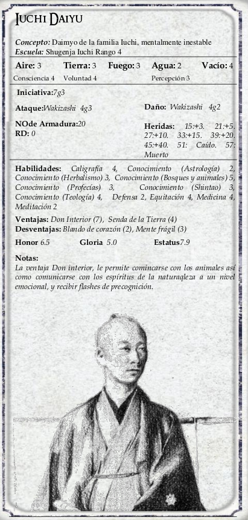

|  | Daiyu, ya que nadie quiere mencionar que se le considera “tocado por el Sol”, o sea, de mentalidad un tanto
demasiado simple (consulta las páginas 73-74 de La Senda del Unicornio 1a edición) Tras suceder a su padre a una edad bastante tardía, Daiyu nunca dejó realmente de dedicarse a sus búsquedas filosóficas, lo que dejó la administración diaria de sus tierras en manos de Hiroichi. Durante la última guerra Daiyu fue un heredero protegido, y lo poco que vio le traumatizó profundamente. Hiroichi es consciente de que si supiese que se está librando una guerra aún durante su mandato acabaría con el frágil daimio, y lleva mintiendo a su señor desde el inicio del conflicto. Daiyu sabe que los Escorpión compiten por esas tierras, pero es apenas consciente de que haya comenzado un enfrentamiento, y mucho menos consciente aún de ningún detalle específico de batallas o bajas. Hasta donde él sabe, la muerte de su esposa fue un accidente. No ha oído nada acerca de los asesinos, del tribunal, ni de otras muchas cosas, y pasa los días felizmente refugiado en los bosques con sus amigos animales (principalmente marmotas). Hiroichi tiene la poco envidiable tarea de escuchar las opiniones encontradas de los consejeros shugenjas antes de tomar todar las decisiones reales en nombre de Daiyu. Los PJ pueden percatarse de que cuando los Unicornio del castillo dicen “Iuchi-sama”, normalmente se refieren a Hiroichi; Daiyu es simplemente “Daiyu-sama” |